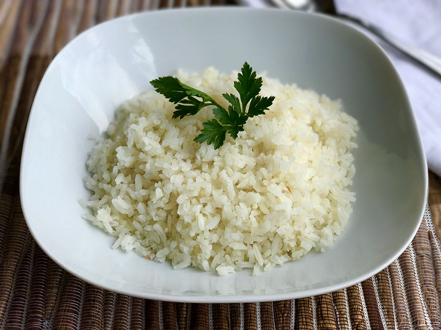

Arroz.
Descripción.
El arroz es un acompañamiento esencial en muchas culturas culinarias. Su preparación básica implica cocinarlo hasta que esté tierno y esponjoso, permitiendo que cada grano quede suelto y bien cocido. Aunque puede hacerse solo con agua y sal, añadir ajo y cebolla al inicio le aporta un sabor más profundo y aromático. Perfecto para acompañar carnes, vegetales o disfrutarse solo, el arroz es un plato versátil y fácil de preparar.
ingredientes.
- Arroz blanco
- Agua
- Sal
- Aceite o mantequilla
- Cebolla y ajo (opcional, para dar más sabor)
Pasos para la preparación.
- Lava el arroz: Enjuaga el arroz bajo agua fría hasta que el agua salga clara para eliminar el exceso de almidón.
- Sofríe la cebolla y el ajo (opcional): Si deseas un arroz más sabroso, sofríe un poco de cebolla y ajo en aceite o mantequilla en la olla.
- Añade el arroz y el agua: Agrega el arroz a la olla, mezcla y luego vierte el agua (la cantidad suele ser el doble que el volumen del arroz).
- Cocina el arroz: Lleva a ebullición, añade sal al gusto, reduce el fuego al mínimo y tapa la olla. Cocina hasta que el agua se absorba y el arroz esté seco.
- Esponja y sirve: Retira del fuego y deja reposar unos minutos. Usa un tenedor para esponjar el arroz antes de servir.